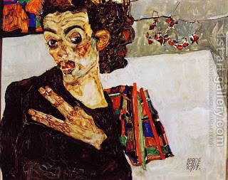

Zavachim 33 - Partial Entry
Ulla said in the name of Resh Lakish, "If a person who was impure puts his hand within the Courtyard, he incurs lashes." Ulla proved this from the verse, " She may not touch anything holy, and she may not enter the Sanctuary ." By touching the Torah here meant eating. However, it used the language of touching to tell us that touching and entry have the same law: just as touching is always partial - that is, done with the fingers and not with the whole body - so too partial entry is considered entry.
Rabbi Hoshaya challenged Ulla using the law of a leper (metsorah) who at the end of his purification puts his fingers inside the courtyard to be anointed with special oil. Although Ulla answered the challenge, Ravina rephrased Ulla's statement as talking about lashes, and not, as we have assumed, about a more strict excision.
When Ravin came from Israel, he said that Resh Lakish's ruling was indeed stated about touching, not about entering the Courtyard, and in fact the disagreement ran as follows. Resh Lakish said that an impure person who touches sacrificial food incurs lashes, while Rabbi Yochanan said that he does not.
Art: Egon Schiele - Self Portrait With Black Vase And Spread Fingers